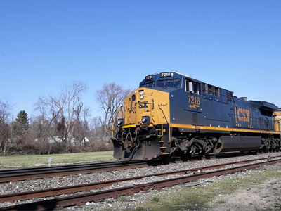

TIC > transport et logistique
La technologie a toujours été un moteur pour l’industrie et la logistique. Grâce aux révolutions industrielles (machine à vapeur, voiture, moteur à combustion) et à l'arrivée d’internet, les systèmes de gestion des transports ont fait un énorme bond en avant.
